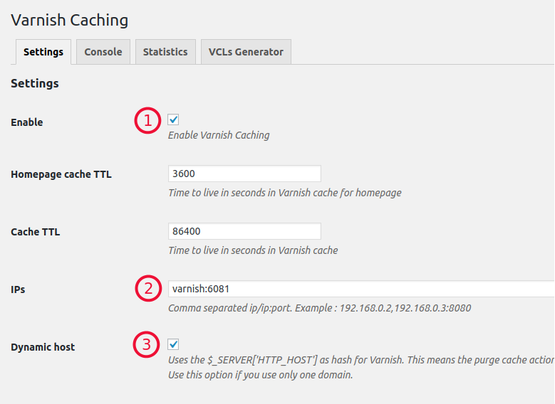

WordPress stack containers¶
Nginx¶
- Nginx can be configured with the following environment variables
- Default Nginx virtual host config
- Installed nginx modules
Restarting nginx as default user:
sudo nginx -s reload
Do not gzip pages in WordPress
We already gzip content on Nginx side and it works faster. Having double gzip may cause issues.
Custom config¶
If the default config and available environment variables are not enough for your customizations you can replace the config with your own:
- Copy
/etc/nginx/conf.d/php.confto your codebase, adjust to your needs - Deploy code with your config file
- Add new environment variable
NGINX_CONF_INCLUDEfor nginx service, the value should the path to your *.conf file (e.g./var/www/html/nginx.conf)
Custom config¶
If the default wordpress config and available environment variables are not enough for your customizations you can replace the config with your own:
- Copy
/etc/nginx/conf.d/wordpress.confto your codebase, adjust to your needs - Deploy code with your config file
- Add new environment variable
NGINX_CONF_INCLUDEfor nginx service, the value should the path to your *.conf file (e.g./var/www/html/nginx.conf
Mod pagespeed¶
Nginx comes with mod_pagespeed which is disabled by default. To enable it add NGINX_PAGESPEED=on environment variable to Nginx service.
Apache¶
- Apache can be configured with the following environment variables
- Default Apache virtual host config
- Installed apache modules
Restarting apache as default user:
sudo httpd -k restart
PHP¶
- PHP can be configured with the following environment variables
- Available php extensions
- Composer pre-installed with a default global package
hirak/prestissimo:^0.3to download dependencies in parallel
Files directory permissions¶
Public files directory (symlink to /mnt/files/public) that used for uploads owned by www-data user (PHP-FPM user) by default and the default container user (anaxexp) has no writing permissions. So if you run a command that creates files in a public directory you will get insufficient permissions error. You can fix this problem by giving writing permissions for files directory to the owner's group (user anaxexp is a member of www-data group) by using one of the helper scripts:
sudo files_chmod /mnt/files/public
For mode details about users and permissions in PHP container see https://github.com/anaxexp/php#users-and-permissions
Environment variables¶
Variables availability
Environment variables provided by AnaxExp are always available in PHP even if PHP_FPM_CLEAR_ENV set to no.
In addition to global environment variables, we provide the following variables in PHP container that you can use in your post-deployment scripts or settings files:
| Variable | Description |
|---|---|
$APP_ROOT |
/var/www/html by default |
$HTTP_ROOT |
e.g. /var/www/html/web |
$CONF_DIR |
/var/www/conf by default |
$ANAXEXP_APP_NAME |
My app |
$ANAXEXP_HOST_PRIMARY |
example.com |
$ANAXEXP_URL_PRIMARY |
http://example.com |
$ANAXEXP_HOSTS |
[ "example.com", "dev.example.org.wod.by" ] |
Deprecated variables:
| Variable | Instead use |
|---|---|
$ANAXEXP_APP_ROOT |
$APP_ROOT |
$ANAXEXP_APP_DOCROOT |
$HTTP_ROOT |
$ANAXEXP_CONF |
$CONF_DIR |
$ANAXEXP_DIR_CONF |
$CONF_DIR |
| ### Xdebug (remote) |
Follow these steps to debug your application instance remotely with xdebug:
- Enable xdebug for your instance from
[Instance] > Stack > Settings - Set up forwarding for xdebug: copy Xdebug SSH tunnel command from
[Instance] > Stack > PHPand run on your local machine - Make sure you have your IDE xdebug listener running on port 9000
- Start debugging in IDE
- Start your browser debug helper plugin (Chrome or Firefox) and open the page you want to debug
Xdebug (local)¶
Debugging web requests¶
- Uncomment these lines for PHP service in your docker-compose file
PHP_XDEBUG: 1 PHP_XDEBUG_DEFAULT_ENABLE: 1
- Restart containers (
make) - Start debugging in IDE
- Start your browser debug helper plugin (Chrome or Firefox) and open the page you want to debug. Alternatively, enable auto start by adding
PHP_XDEBUG_REMOTE_AUTOSTART=1
Debugging CLI requests¶
- Enable Xdebug as described in the previous section
- Uncomment the following environment variables for PHP service in your composer file
PHP_XDEBUG_REMOTE_CONNECT_BACK: 0 PHP_IDE_CONFIG: serverName=my-ide
- Configure your IDE
- Perform configuration as described below depending on your OS and Docker version:
Linux, Docker¶
- Uncomment
PHP_XDEBUG_REMOTE_HOST: 172.17.0.1for PHP service (if you have docker 18.03+ you can specifyhost.docker.internalinstead of the IP address) - Restart containers (
make)
macOS, Docker¶
- Uncomment
PHP_XDEBUG_REMOTE_HOST: 10.254.254.254for PHP service (just a random IP that very likely won't be used by anything else). - Restart containers (
make) - You also need to have loopback alias with IP from above. You need this only once and that settings stays active until logout or restart:
sudo ifconfig lo0 alias 10.254.254.254
- To add the loopback alias after a reboot, add the following contents to
/Library/LaunchDaemons/docker4drupal.loopback.plist:<plist version="1.0"> <dict> <key>Label</key> <string>Default Loopback alias</string> <key>ProgramArguments</key> <array> <string>/sbin/ifconfig</string> <string>lo0</string> <string>alias</string> <string>10.254.254.254</string> <string>netmask</string> <string>255.255.255.0</string> </array> <key>RunAtLoad</key> <true/> </dict> </plist>
Windows¶
- Uncomment
PHP_XDEBUG_REMOTE_HOST: 10.0.75.1for PHP service (default IP of Docker NAT). - Restart containers (
make) - Allow listen connection for your IDE in
Windows Firewall > Allow an app ..
Also, you might need to add the following lines to your hosts file (see related github issue):
0.0.0.0 localhost 10.0.75.1 localhost
IDE configuration¶
You must additionally configure your IDE to debug CLI requests.
PHPStorm¶
- Open
Run > Edit Configurationsfrom the main menu, chooseDefaults > PHP Web Pagein the left sidebar - Click to
[...]to the right ofServerand add a new server- Enter name
my-ide(as specified inPHP_IDE_CONFIG) - Enter any host, it does not matter
- Check
Use path mappings, select path to your project and enter/var/www/htmlin the right column (Absolute path on the server)
- Enter name
- Choose newly created server in "Server" for PHP Web Page
- Save settings
NewRelic¶
You can add NewRelic APM monitoring for PHP by adding environment variables PHP_NEWRELIC_ENABLED=1 and PHP_NEWRELIC_LICENSE with your license number to PHP-FPM container. Application name will be automatically set to [AnaxExp Application Name] - [AnaxExp Instance Name], if you want to change it, use PHP_NEWRELIC_APPNAME.
Profiling¶
You can profile your PHP application either via Xdebug traces (+Webgrind) or Tideways XHProf extensions.
WP CLI¶
PHP container comes with pre-installed WP CLI.
Redirects¶
If you need to make a redirect from one domain to another you can do it by customizing configuration files of nginx or by adding the snippets below to your wp-config.php file.
Redirect from one domain to another:
if (isset($_SERVER['ANAXEXP_ENVIRONMENT_TYPE']) && $_SERVER['ANAXEXP_ENVIRONMENT_TYPE'] == 'prod' && php_sapi_name() != "cli") { if ($_SERVER['HTTP_HOST'] == 'redirect-from-domain.com') { header('HTTP/1.0 301 Moved Permanently'); header('Location: http://redirect-to-domain.com' . $_SERVER['REQUEST_URI']); exit(); } }
Redirect from multiple domains:
if (isset($_SERVER['ANAXEXP_ENVIRONMENT_TYPE']) && $_SERVER['ANAXEXP_ENVIRONMENT_TYPE'] == 'prod' && php_sapi_name() != "cli") { $redirect_from = array( 'redirect-from-domain-1.com', 'redirect-from-domain-2.com', ); if (in_array($_SERVER['HTTP_HOST'], $redirect_from)) { header('HTTP/1.0 301 Moved Permanently'); header('Location: http://redirect-to-domain.com' . $_SERVER['REQUEST_URI']); exit(); } }
Crond¶
A duplicate of the main PHP container runs with crond (instead of FPM). You can customize crontab from [Instance] > Stack > Settings page.
SSHd¶
A duplicate of PHP container runs with SSH daemon (instead of FPM). You can find access information on [Instance] > Stack > SSH
Public SSH keys from your AnaxExp profile will be added automatically for all users that have access to an instance.
Mailhog¶
If Mailhog service enabled and chosen as Mail delivery service at [Instance] > Stack > Settings all outbound email will be caught by the Mailhog. You can view and release these emails from Mailhog UI, the URL can be found from Domains tab. When release specify opensmtpd in SMTP server field if you want to release emails to the default Mail transfer agent (OpenSMTPD).
OpenSMTPD¶
See OpenSMTPD stack documentation.
MariaDB¶
See MariaDB stack documentation.
Node.js¶
Light-weight node.js container to help you build your application's frontend. The containers comes without any global pre-installed packages, you can add them by running yarn global add PACKAGE or by running yarn in a directory with your package.json file.
Redis¶
You can configure Redis via environment variables that listed at https://github.com/anaxexp/redis. See Redis stack for more details.
Integration:
- Install and activate redis plugin
- Go to redis plugin settings page and click "enable object cache" button
Varnish¶
Integration:
- Go to
App instance > Stack > Varnishin AnaxExp dashboard and copy automatically generated value of$VARNISH_PURGE_KEY - Install and activate Varnish Caching plugin in your WordPress website
- On the plugin cache settings configure as shown below:
 - Copy/paste the key to
Purge keyin plugin setting - Save all plugin settings changes
For more details see Varnish stack documentation
Rsyslog¶
Rsyslog can be used to stream your applications logs. It's similar to using syslog, however there's no syslog in PHP container (one process per container). Rsyslog will stream all incoming logs to a container output.
You can use Monolog with SyslogUdpHandler to stream logs to rsyslog
Blackfire¶
You can profile your application via blackfire.io by following the next steps:
- Enable blackfire probe extension by adding the environment variable
PHP_BLACKFIRE=1to PHP container - Enable blackfire agent service in your stack
- Add environment variables
BLACKFIRE_SERVER_IDandBLACKFIRE_SERVER_TOKENto blackfire agent service with appropriate values from your blackfire.io profile - Install blackfire companion extension for Chrome or Firefox
- Start profiling your app via the extension and see data from blackfire.io dashboard
Fore more details please refer to the blackfire official documentation
Webgrind¶
Webgrind allows you view and analyze Xdebug profiler output and generate call graphs for visualisation. To use Webgrind first enable Xdebug profiler by adding the following environment variables to your PHP container:
PHP_XDEBUG: 1 PHP_XDEBUG_PROFILER_ENABLE: 1 PHP_XDEBUG_PROFILER_ENABLE_TRIGGER: 1 PHP_XDEBUG_PROFILER_ENABLE_TRIGGER_VALUE: 1
Add XDEBUG_PROFILE=1 param to GET or POST request (or set a cookie) you want to profile. Xdebug will generate profile files in /mnt/files/xdebug/profiler. Click Update in Webgrind to access the new information. See https://xdebug.org/docs/profiler to learn more about xdebug profiling.
IMPORTANT
Xdebug profiling significantly decreases performance and increases resources usage. DO NOT USE it on Production servers.